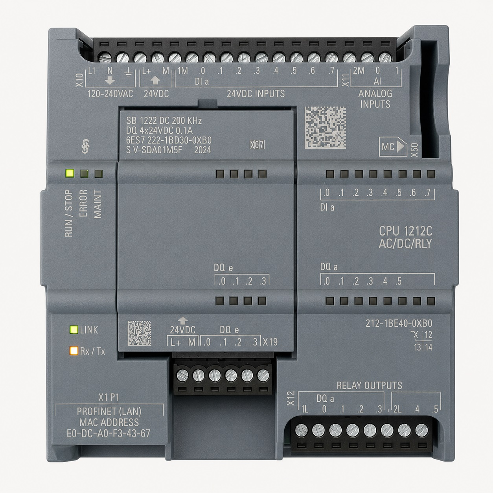
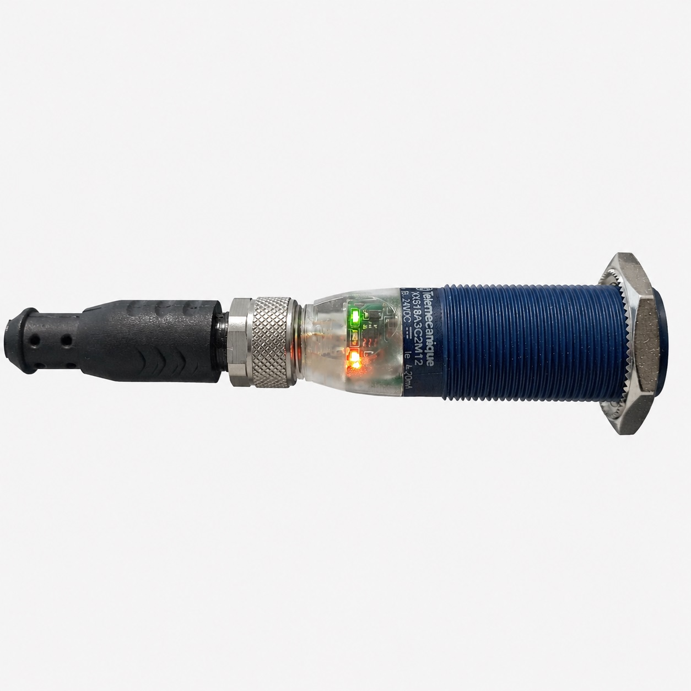
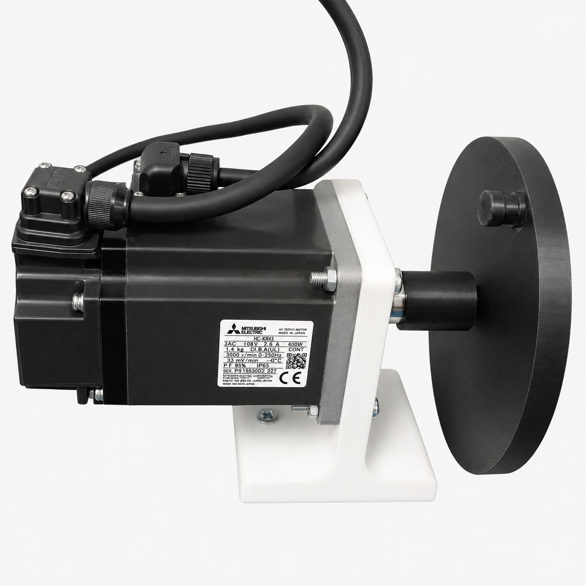
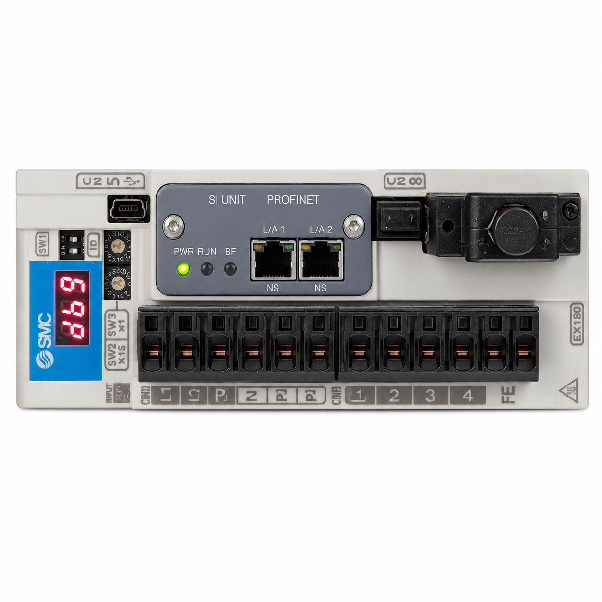

Izena: Xabier Pujana Nombre: Xabier Pujana
Kontaktua: xabier.pujana@zulaibar.net Contacto: xabier.pujana@zulaibar.net
Servomotor baten kontrola PID bidez Control de un servomotor mediante PID


Izena: Xabier Pujana Nombre: Xabier Pujana
Kontaktua: xabier.pujana@zulaibar.net Contacto: xabier.pujana@zulaibar.net
Automata: CPU 1212C AC/DC/Rly Automata: CPU 1212C AC/DC/Rly
Erreferentzia: 6ES7 212-1BE40-0XB0 Referencia: 6ES7 212-1BE40-0XB0
IP helbidea: 172.21.4.115 Dirección IP: 172.21.4.115
Firmware bertsioa: V4.4 Versión Firmware: V4.4

Modeloa:Telemecanique ultrasonic sensor cylindrical (XX918A3C2M12) Modelo:Telemecanique ultrasonic sensor cylindrical (XX918A3C2M12)
Neurketa-tartea: 0,5 m - 4,20 mA Intervalo de medición: 0,5 m - 4,20 mA

Modeloa: Mitsubishi Electric HG-KR43 Modelo: Mitsubishi Electric HG-KR43

Modeloa: MELSERVO-JE Series MR-J4-40TM-LD Modelo: MELSERVO-JE Series MR-J4-40TM-LD

%IW64: Distantzia Sentsora %IW64: Sensor de Distancia
Q0.2: Teaching Q0.2: Teaching
Praktika honetan Servomotorra mugituko dugu alde batera eta bestera
Servoa mugitzeko JOG_P eta JOG_N mugimenduekin hastea eta servoaren posizioaren baloreekin hasierako hartu emonak izatea
Ondorengo linkean ikusteko
En esta práctica moveremos el Servomotor de un lado a otro
Comenzar con los movimientos JOG_P y JOG_N para mover el servo y toma de contacto inicial con los valores de posición del servo
Ver en el siguiente link
Praktika honetan Servomotorra mugituko dugu DASHBOARD bidez eta bere "0" posizioa markatu
Servoa mugitzeko JOG_P eta JOG_N mugimenduekin hastea eta servoaren posizioaren baloreekin eta DASHBOARDarekin hasierako hartu emonak izatea
Ondorengo linkean ikusteko
En esta práctica moveremos el Servomotor PARA MARCAR SU "0" POSICIÓN y manejaremos la DASHBOARD
Comenzar con los movimientos JOG_P y JOG_N para mover el servo y toma de contacto inicial con los valores de posición del servo y la DASHBOARD
Ver en el siguiente link
Praktika honetan Servomotorra mugituko dugu Programatutako Posizioetara
Servoa mugitzeko kontrolerako DBan hasierako baloreak sartu eta konfigurazio parametroak ezagutzen hastea
Ondorengo linkean ikusteko
En esta práctica moveremos el Servomotor a posiciones programadas
Comenzar con los movimientos programados mediante el DB de CONTROL de EJE de la plantilla y conocer los parametros de configuración del mismo
Ver en el siguiente link
Praktika honetan Posizio neurketarako sentsorea eskalatzea programatuko dugu
NORM-X eta SCALE moduko komandoekin sentsorearen neurriak ajustatzen ikastea
Ondorengo linkean ikusteko
En esta práctica programaremos el escalado del sensor de posicion
Aprender a ajustar los valores de medida del sensor mediante los comandos de programacion NORM-X y SCALE
Ver en el siguiente link
Praktika honetan posizio erregulazioarekin hastapenak egingo ditugu
PID Compact blokeagaz erregulatzen hastea posizioa kontrolatuz
Ondorengo linkean ikusteko
En esta práctica comenzaremos a controlar la regulación de posicion
Kontrolar la posición mediante el bloque PID Compact
Ver en el siguiente link
Praktika honetan Aurretik ikusitako kontzeptuak elkartu eta erregulazio konpletua egingo dugu
Jasotako Erregulazio kontzeptuak eta programazio kontzeptuak elkartu eta maketaren posizio kontrol osoa egin
Ondorengo linkean ikusteko
En esta práctica haremos un control total de la maqueta usando los conceptos anteriores.
mediante los conceptos de regulación y los de programación, programar un control total de la posición
Ver en el siguiente link